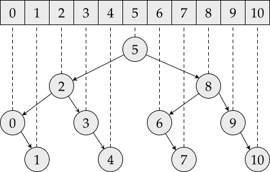

An Introduction to Binary Search
Binary search allows us to quickly – in O(lg n) time – find the index of a value v in a sorted array A. In other words, binary search is valuable because it spares us from having to exhaustively look for a value in the array (which would have been an O(n) operation), as long as we know the array to be sorted.
The Vanilla Algorithm
The algorithm works by firstly considering that v, if in the array, must exist somewhere in the interval
I = [start, end]
= [0, len(A) - 1]
We can then ask ourselves the question: could it be that v is right at the middle of I, at index
mid = start + (end - start) / 2
= 0 + (len(A) - 1 - 0) / 2
= (len(a) - 1) / 2
If yes, we’ve found our answer and the algorithm is over. If not, then we know that the answer must lie either in the interval
I = [0, mid - 1]ifA[mid] > vorI = [mid + 1, end]ifA[mid] < v.
We can at this point recalculate mid over this new interval and repeat the process all over again. The algorithm is going to progressively halve the length of I until either we find a mid index such that A[mid] = v or until start > end, signalling that v is not in the array.
As we’re halving the size of the considered interval at each step, we’re guaranteed to be executing, in the worst case scenario, roughly O(lg n) steps, hence the O(lg n) time complexity of the algorithm.
Implementation
There are two obvious ways of implementing the algorithm: either iteratively or recursively. Given that the iterative solution avoids stackoverflows and is generally faster without incurring into any obvious downsides, that’s the one that will be shown:
public static int binarySearch(int[] A, int v) {
int start = 0;
int end = A.length - 1;
while (start <= end) {
int mid = start + (end - start) / 2;
if (A[mid] < v) {
start = mid + 1;
} else if (A[mid] > v) {
end = mid - 1;
} else {
return mid;
}
}
return -1; // we couldn't find v in the array
}
Variants
Now that we’ve seen how to find a value v in a sorted array A, let’s try to solve slightly different problems, all while still using binary search.
Find First Element
What happens when the given sorted array A contains duplicate elements? Our baseline algorithm will immediately return when finding v, so we’re given no guarantees of which index will be returned. It may in certain cases be useful to know we’re getting the first index, if multiple exist.
To do that, we make use of a new variable candidate, that will be used to store the smallest indice we’ve found yet of an array element equal to v.
public static int binarySearch(int[] A, int v) {
int start = 0;
int end = A.length - 1;
int candidate = A.length;
while (start <= end) {
int mid = start + (end - start) / 2;
if (A[mid] < v) {
start = mid + 1;
} else if (A[mid] > v) {
end = mid - 1;
} else {
candidate = mid;
end = mid - 1;
}
}
return candidate == A.length ? -1 : candidate;
}
Count Number Of Occurrences
And what about finding how many occurrences of a given v can we find in a sorted array? One possibility would be implementing two methods, one calculating the index of the first occurrence of v in A (leftIdx) and another one calculating the index of the last occurrence of v in A (rightIdx). The number of occurrences would then be rightIdx - leftIdx + 1.
And while that solution works, it also means some duplicated code.. something we’d like to avoid.
A better alternative is to implement a single binarySearch(A, v) method that will calculate what’s the index of the first index of v, if v exists, or what would the index be in case we’d like to insert v into A. We can then use leftIndex = binarySearch(A, v) to find the index of the first element in the array, if it exists, and then calculate rightIndex = binarySearch(A, v + 1) to find the index of the next element, if it exists. The result should then be rightIndex - leftIndex:
public static int countOccurrences(int[] A, int v) {
int leftIdx = binarySearch(A, v);
if (leftIdx == A.length || A[leftIdx] != v)
return 0;
int rightIdx = binarySearch(A, v);
return rightIdx - leftIdx;
}
Do note we could alternatively have defined binarySearch(A, v, start, end), such that the call to calculate the first index would go like
leftIndex = binarySearch(A, v, 0, A.length - 1)
and for the right index
rightIndex = binarySearch(A, v + 1, leftIndex + 1, end)
Building a Balanced Binary Search Tree Out of a Sorted Array
If we’re given a sorted array, what’s the quickest way of creating a balanced binary search tree out of it?
Well, as the diagram below exemplifies, the root node is right at the center of the interval that goes from the first to the last elements of the array. It’s left subnode and right subnodes also sit at the middle of the intervals [0, mid - 1] and [mid + 1, end], and so on:

So a simple recursive implementation that always creates a node out of the current mid should suffice:
public static Node createTree(int[] A) {
return createTree(A, 0, A.length - 1);
}
private static Node createTree(int[] A, int start, int end) {
if (start > end)
return null;
int mid = start + (end - start) / 2;
return new Node(
A[mid],
createTree(A, start, mid - 1),
createTree(A, mid + 1, end)
);
}
This problem can also be seen at Leetcode - Convert Sorted Array To Binary Search Tree.
Problems
Here I’m listing some interesting applications of binary search to leetcode problems. For some of them binary search may come as the obvious technique to use, while for others, not so much.
First Bad Version
Link: First Bad Version
Binary search. If the version is bad, keep the current version as a candidate result but attempt to find a previous version that is also bad.
Search a 2D Matrix
Link: Search a 2D Matrix
At first sight, we may be tempted to solve it with two binarySearch() methods: one that searches over rows and another one searching over columns. But we can avoid all of that if we instead think of this 2D array as a single 1D array, making use of the fact that we know that the last element of row R is always smaller than the first element of row R + 1. Then it all just turns into a matter of converting indexes from the 1D to the 2D array back and forth while binary searching.
Sqrt(x)
Link: Sqrt(x)
There are for sure more efficient ways to calculate the square root of a number, but binary search can also help us here if we’re don’t know any better.
Gist of the algorithm: we know that the square root of a number k must be a number between 1 and k, so we can binary search over that interval, finding a result in O(lg n) time.
Minimum Number of Days to Make m Bouquets
Link: Minimum Number of Days to Make m Bouquets
We want to guess what’s the minimum number of days containing enough sequences of already blossomed flowers to create the needed amount of bouquets. Checking whether at a given day there are enough adjacent flowers to create all the needed bouquets can be calculated in O(n), so we just need to binary search over the possible range of days (minimum and maximum days that a flower can blossom). The end solution will comfortably run in O(n lg n).
Koko Eating Bananas
Link: Koko Eating Bananas.
A problem that can be solved similarly to Minimum Number of Days to Make M Bouquets.